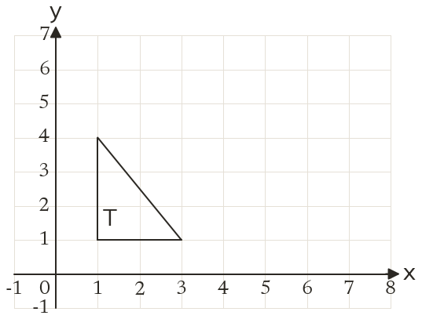
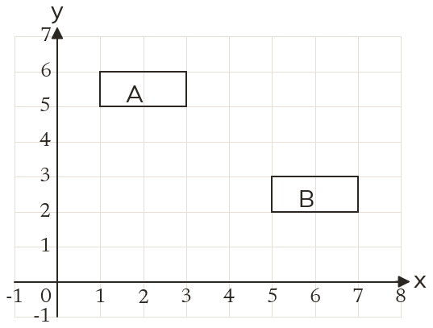
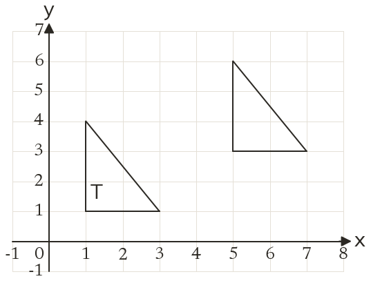

Westonbirt Maths · Transformations
Translations and Reflections
Name: ______________________ Date: ____________
1
Translate triangle T by the vector 42.
2
Write the column vector that maps shape A onto shape B.
3
The point (-2, 3) is translated by 5-4. Where does it go?
4
A translation maps (6, 1) to (2, 5). Write its column vector.
5
A shape is translated by 31. Which vector maps the image back onto the shape?
Ext
A translation by -25 maps the point (a, b) to (4, 7). Find a and b.


